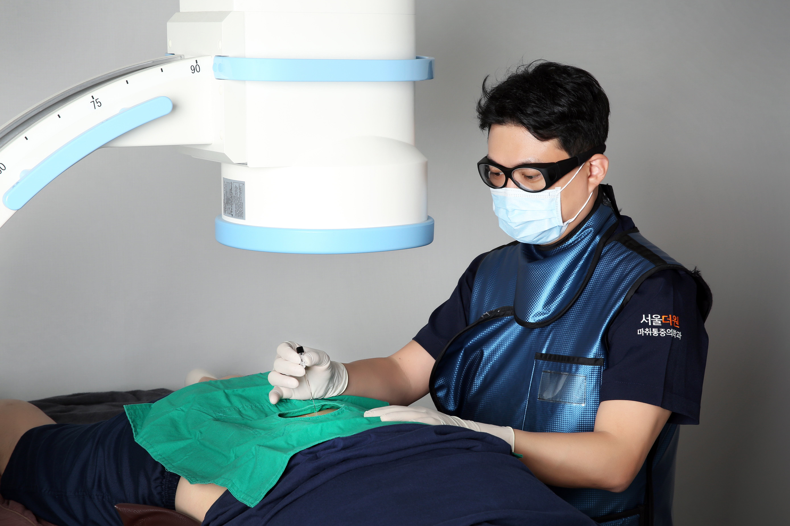
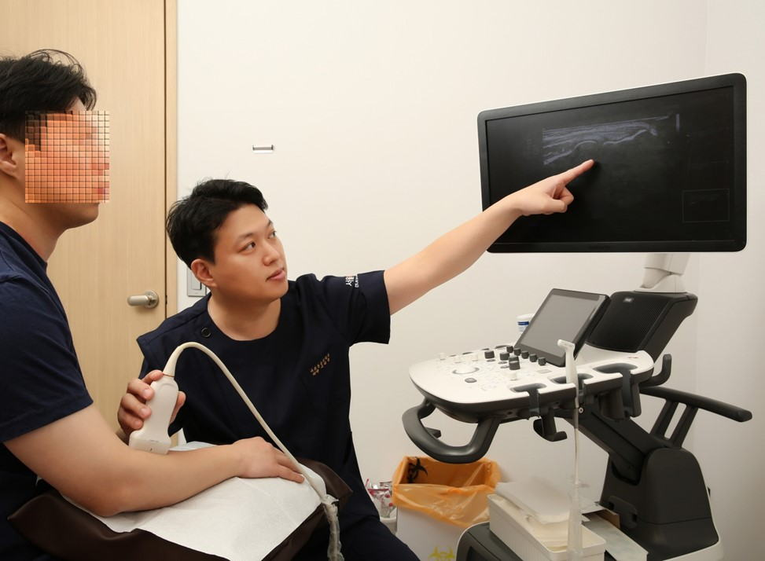

안녕하세요? 마취통증의학과 전문의 이원종 인사드립니다.
사람은 누구나 통증을 경험합니다. 어떠한 통증을 느끼는지, 통증으로 인한 생활의 불편함은 무엇인지, 의사로서 경청하고 이해하여 정확한 진단과 효과적인 방법의 치료를 제시하겠습니다. 환자의 통증을 조절하고 삶의 질을 높여주는 것이 본원의 치료 목적입니다.
많은 환자 분들을 뵙고 아픈 곳을 어루만지며, 판교 역군들의 통증지킴이가 되겠습니다. 감사합니다.

